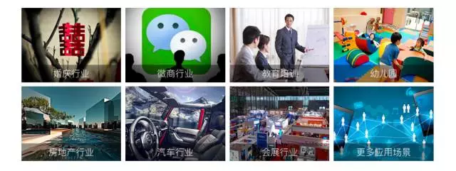

播购电商直播服务是致力于洞穿社交电商和共享经济，一方面在消费升级的时代背景下，让更多的用户能带着乐于分享好物的精神，享受直播购物的快乐，买到称心如意的商品。另一方面帮助商家实现新电商经济模式下的直播营销变革。播购以直播电商服务体系为核心，结合丰富的直播策划能力、优质的红人资源对接、广泛的直播合作渠道、稳定的直播技术能力、持续的二次营销推广，帮助更多企业和商家在整个经营过程中打通多个商业场景，实现全方位触达精准用户、快速营销变现的能力。
播购产品已经打通APP端、网页端、PC端、后台等多终端产品。实现一站式直播购物体验。
（1）APP端：主要分为ios端和andorid端，可实现直播购物全部功能。
（2）网页端：可在微信、QQ、微博等渠道分享传播，并且在直播购物上实现与APP一致体验，当前不支持网页端开直播功能。
（3）后台：主要指商家后台，帮助商家在后台管理商品、订单等信息。
播购产品用户角色分为普通用户、红人用户。
（1） 普通用户：可在平台观看主播直播、互动、购买商品等操作。
（2） 红人用户：除了具备普通用户权限外，可在平台完成开直播、直播接单等操作。